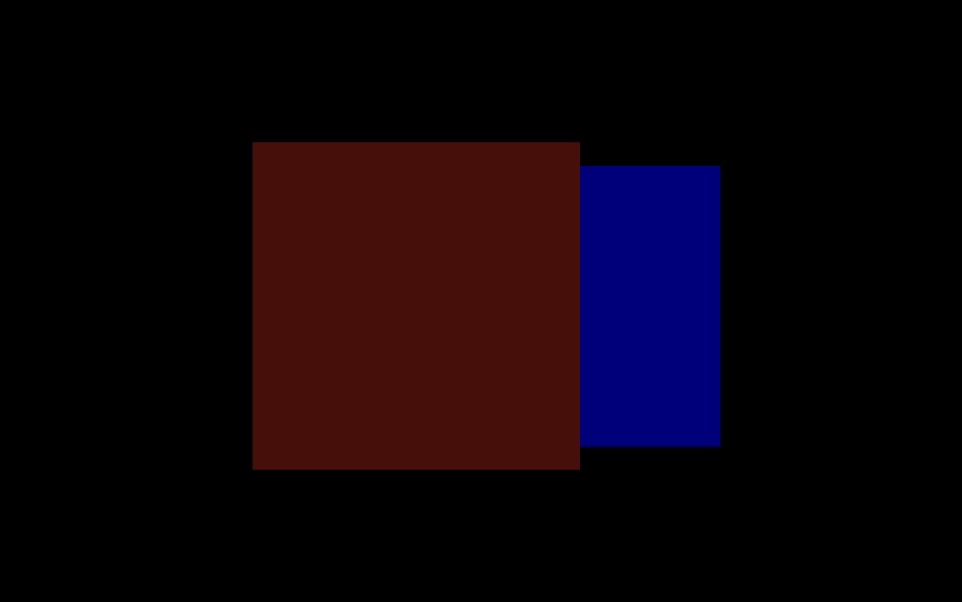

此為 Three.js 中物體的遠近關係 系列文章 - 第 5 篇：
- Three.js 中物體的遠近關係 (1) - 什麼是深度測試？
- Three.js 中物體的遠近關係 (2) - 左手/右手座標系與齊次座標
- Three.js 中物體的遠近關係 (3) - 深度值的計算方式
- Three.js 中物體的遠近關係 (4) - 對數深度值
- Three.js 中物體的遠近關係 (5) - 渲染物體的順序
- Three.js 中物體的遠近關係 (6) - 如何正確的渲染透明粒子？
前言
前面幾篇系列文中介紹深度測試運作的原理，而決定畫面上的兩個物體誰遠誰近，除了跟物體之間深度值差異有關，另外也相同重要的是物體間渲染的順序，今天這篇文章就讓我們討論在 Three.js 中是如何根據不同種類的物體決定渲染順序
渲染物體的順序
在 切換深度測試的開關 中我們將紅色平面的 depthTest 設為 false，最終藍色平面中的 像素(fragment) 都通過深度測試，覆蓋紅色平面繪製到螢幕上
接著我們嘗試將紅色平面變成透明物體，在 Three.js 中指的是將 Material.transparent 設為 true，這時神奇的事情發生了原本中間會出現的藍色平面現在不見了，只剩紅色平面顯示在畫面上
造成這個現象的關鍵點其實是因為當物體設爲透明後，渲染物體的順序就會改變，在 Three.js 底層的程式碼中，會將場景中的物體都先分類，其中一類是 不透明的物體，而一類是 透明的物體，而在將物體繪製到畫面時，一率都先繪製 不透明的物體，接著才繪製 透明的物體，所以當把紅色平面設成透明物體後，繪製物體的順序從原本的 紅色平面 => 藍色平面 變為 藍色平面 => 紅色平面，而紅色平面因為設定了 depthTest = true，代表在繪製 紅色平面 時一律都會將其繪製到畫面上，也因此我們所看到的畫面上只有 紅色平面
為什麽需要先繪製不透明物體？
上面我們知道 Three.js 會先行繪製不透明物體，接著才繪製透明物體，下面我們來講解為什麼需要按照這樣的次序進行渲染，首先我們先反過來看如果先繪製透明物體，會導致什麼問題
先繪製透明物體 (錯誤)
假設場景中的透明物體在前、不透明物體在後，第一個繪製的是透明物體並顯示在畫面上，接著第二個繪製不透明物體時，由於不透明物體在透明物體的後面，因此不透明物體的深度測試無法通過，而前面我們提過當深度測試失敗的時候，會完全丟棄這個 像素(fragment)，也就是說不透明物體最終不會渲染在畫面上
下面我們實際來看當先繪製透明物體時，場景會變成怎麼樣，在前面的紅色平面是透明物體（opacity = 0.3），在後面的藍色平面是不透明物體，後面繪製的藍色平面因為無法通過深度測試而整個被丟棄掉，使得最後畫面上只剩下透明的紅色平面
這樣的畫面很明顯是錯誤的，因為照理來說視線應該要能夠看到透明物體後面的東西，但在這個狀況下，即使透明紅色平面後面有藍色平面，但因為藍色平面的 像素(fragment) 都被丟棄掉了，畫面上只看得到前面的透明紅色平面
先繪製不透明物體 (正確)
一樣假設透明物體在前、不透明物體在後，第一個繪製的是不透明物體並顯示在畫面上，接著第二個繪製透明物體時，由於透明物體在不透明物體的前面，因此透明物體的深度測試通過，而透明物體與不透明物體重疊的區域會以 混合(Blending) 方式決定最終畫面上的顏色
下面我們實際來看當先繪製不透明物體時，場景會變成怎麼樣，在前面的紅色平面是透明物體（opacity = 0.3），在後面的藍色平面是不透明物體，後面繪製的紅色平面會與之前畫面上存在的藍色平面進行 混合(Blending)，因此可以看到中間是紅、藍混合後類似紫色的顏色，這代表視線可以穿過透明的紅色平面看到後面的藍色平面，達到正確的效果
物體的渲染順序 - Three.js 原始碼
接著讓我們來研究看看 Three.js 原始碼中是如何處理不透明物體與透明物體的渲染順序
渲染場景
WebGLRenderer.js 檔案裡的 renderScene 函式 負責渲染場景中的所有物體，在這函式之中可以得知物體渲染的順序為：
不透明物體(opaqueObjects) => 透光物體(transmissiveObjects) => 透明物體(transparentObjects)
1 | function renderScene(currentRenderList, scene, camera, viewport) { |
在 renderScene 函式中場景的所有物體在 currentRenderList 中就已經被分為三個種類依序繪製，接著可以順著查到 currentRenderList 這個變數被定義在 WebGLRenderer.js 中
1 | renderLists = new WebGLRenderLists(); |
currentRenderList 是 renderLists.get 函式中所拿出的一個變數，而 renderLists 是 WebGLRenderLists 創造的實例，至於 renderLists.get 回傳的會是 WebGLRenderList 類別，接著可以在 WebGLRenderList 函式中找到場景中的所有物體是怎麼被分為 三類(不透明、透光、透明) 進行處理的
加入物體
當把物體加進場景中時，根據 MeshPhysicalMaterial.transmission 跟 Material.transparent 的設置決定將物體分在哪一類的矩陣中，如果 MeshPhysicalMaterial.transmission 有設置代表是 透光物體 加入到 transmissive 矩陣中，或者 Material.transparent 有設置代表是 透明物體 加入到 transparent 矩陣中
1 | function WebGLRenderList() { |
排序物體
加入物體的步驟已經將場景中的所有物體分為三種不同的種類，接著還需要決定每個種類裡的物體渲染的優先順序，所以接著需要對 opaque, transmissive, transparent 這三個矩陣進行排序，在 sort 函式中傳入的 customOpaqueSort 與 customTransparentSort 分別是使用者可以從 WebGLRenderer.setOpaqueSort 與 WebGLRenderer.setTransparentSort 帶進來自定義物體排序的函式
1 | function WebGLRenderList() { |
而如果沒有帶入自定義排序的函式，就會套用 Three.js 預設的排序方式，對於 不透明物體 使用的是 painterSortStable，而 透光物體 與 透明物體 使用的是 reversePainterSortStable
painterSortStable
1 | function painterSortStable(a, b) { |
reversePainterSortStable
1 | function reversePainterSortStable(a, b) { |
在 painterSortStable 跟 reversePainterSortStable 排序函式中用到了 groupOrder, renderOrder, material.id, z, id 這幾個變數來決定物體渲染的順序，下面我們先來了解這些變數代表的意思
- groupOrder
來源於 projectObject 函式，projectObject 的主要目的是將 geometry, material 等參數加入到 currentRenderList 中，這個函式的最後會遞歸遍歷 object.children 底下的所有物體
所以當某個 子物體(object) 的上一層是 Group 時，那麼這個子物體的 groupOrder 指的就是上一層 Group 的 renderOrder，而這個 groupOrder 變數是最優先在排序函式中進行判斷的
1 | function projectObject(object, camera, groupOrder, sortObjects) { |
- renderOrder
指的就是物體的 Object3D.renderOrder，定義這個物體在場景中的渲染順序，在 painterSortStable 跟 reversePainterSortStable 中 renderOrder 對排序的影響是
1 | return a.renderOrder - b.renderOrder; |
也就是說 renderOrder 的值越小，物體就會越先進行渲染
- material.id
Material.id 代表這個材質的唯一 id 值，在 Material.js 檔案中 id 數值的計算是遞增的
1 | let _materialId = 0; |
這代表越後面創建的 Material，其 material.id 的值就會越大
1 | const material1 = new THREE.MeshBasicMaterial(); |
回過頭來看 painterSortStable 中使用 material.id 排序的方式，代表當兩個物體用到不同的 Material 時，越後面創建的 Material 就會排在越後面進行渲染
1 | return a.material.id - b.material.id; |
- z
代表的是深度值的 z
painterSortStable
painterSortStable 函式計算 z 的排序用的是 return a.z - b.z，這代表比較近的物體會先進行渲染
reversePainterSortStable
reversePainterSortStable 函式計算 z 的排序用的是 return b.z - a.z，這代表比較遠的物體會先進行渲染
- id
指的是 Object3D.id，跟 material.id 一樣是一個隨時間增加的變數
1 | const object1 = new THREE.Object3D(); |
排序函式解釋
介紹完以上這幾種套用在排序函式裡的變數，下面來解釋這兩個排序函式為什麼是這樣寫的
- painterSortStable
預設套用在 不透明物體的 painterSortStable 函式，決定物體渲染次序的優先級分別是：
groupOrder: 每個物體 父層(Object3D.parent) 的renderOrder，最優先會根據父層元素的renderOrder來決定渲染順序renderOrder: 接著是由物體本身的renderOrder決定渲染順序，越低的renderOrder代表越先進行渲染material.id: 第三個順序是以物體material創建的順序決定，如果物體用到的material先被創建，那麼就會越先進行渲染，這裡我覺得蠻奇怪的，繪製順序應該跟material創建的順序沒什麼關聯才對，我覺得排第三個的順序應該要是深度值z，物體的渲染順序應該跟物體離相機的距離z比較有關係，而不是material創建的順序z: 第四個順序用 深度值z- 物體離相機的距離 決定渲染的順序，深度值z越小也就是離相機越近的話，會越先進行渲染，為什麼z越小的越先進行渲染，請看後面的 延伸閱讀 1. 為什麼不透明物體，預設的渲染順序是 z 越小的越先進行渲染？id: 最後的id代表的是物體本身創建的順序，越先創建的物體就會越先進行渲染
1 | function painterSortStable(a, b) { |
- reversePainterSortStable
預設套用在 透光物體 與 透明物體 的 reversePainterSortStable 函式，決定物體渲染次序的優先級分別是：
groupOrder: 跟上面一樣groupOrder越小越先進行渲染renderOrder: 跟上面一樣renderOrder越小越先進行渲染z: 深度值z是唯一與painterSortStable有所差別的地方，越大的z會越先進行渲染跟painterSortStable相反，這也是為什麼這個函式叫做reversePainterSortStable的原因，至於為什麼reversePainterSortStable中越大的z越先進行渲染呢？ 請看 延伸閱讀 2. 為什麼透光物體、透明物體，預設的渲染順序是 z 越大的越先進行渲染？id: 跟上面一樣id越小越先進行渲染
1 | function reversePainterSortStable(a, b) { |
結論
今天的文章中探討了 Three.js 中物體渲染的順序，分別是 不透明物體(opaqueObjects) => 透光物體(transmissiveObjects) => 透明物體(transparentObjects)，接著也研究了這三類物體各自裡面又是怎麼利用 排序函式 決定物體先後的渲染順序，對於 不透明物體 來說預設採用的是 painterSortStable 函式， z 越小的話會越先進行渲染，但 透光物體及透明物體 預設的是採用 reversePainterSortStable 函式，z 越大的話會越先進行渲染
藉由前面幾篇系列文章可以了解深度測試的運作原理，加上今天學習三種不同種類物體的渲染順序，我們就可以清楚的理解在 Three.js 裡物體之間的遠近關係，以及當不同物體有前後重疊的關係時，最終畫面上呈現的應該會是哪個物體
延伸閱讀
1. 為什麼不透明物體，預設的渲染順序是 z 越小的越先進行渲染？
假設畫面上有兩個物體，紅色平面在前面(深度值較小) 及 藍色平面在後面(深度值較大)，如下圖所示：
渲染 不透明物體 的順序有兩種方式，一種是先渲染 紅色平面，另一種先渲染 藍色平面：
1. 先渲染 紅色平面 - z 小的先渲染
先渲染 紅色平面 時，會先把整個 紅色平面 都畫上去，接著渲染 藍色平面 時，紅色平面 與 藍色平面 重疊的部分由於 藍色平面 的深度值較大會被捨棄，而 藍色平面 上沒有重疊的部分則是通過深度測試畫上去
2. 先渲染 藍色平面 - z 大的先渲染
先渲染 藍色平面 時，會把整個 藍色平面 都畫上去，接著渲染 紅色平面 時，因為整個 紅色平面 的深度值都較小所以整塊 紅色平面 都會通過深度測試而畫上螢幕
可以看到不論是先渲染 紅色平面 或是 先渲染 藍色平面，最後 紅色平面 都是在 藍色平面 前面的，那為什麼在 Three.js 裡渲染不透明物體時，預設使用的 painterSortStable 函式是採用 z 越小的越先進行渲染呢？這主要應該是性能的考量，以上面 狀況 1. 先渲染紅色平面 來看，曾經有被繪製到畫面上的有第一步的 紅色平面 以及第二步 不與紅色平面重疊的藍色平面部分，但如果是 狀況 2. 先渲染藍色平面 的話，第一步會繪製整個 藍色平面，第二步也會繪製整個 紅色平面，跟 狀況 1. 相比就多繪製了 紅色平面與藍色平面重疊的部分
所以即使 不透明物體 先渲染 z 大或 z 小的物體最後在畫面上看起來都一樣，但以繪製畫面的步驟上來看，先渲染 z 小的物體可以避免多餘的渲染增加性能
2. 為什麼透光物體、透明物體，預設的渲染順序是 z 越大的越先進行渲染？
一樣假設畫面上有兩個物體，透明的紅色平面在前面(深度值較小) 及 透明的藍色平面在後面(深度值較大)，渲染 透明物體 一樣有兩種方式，z 小的先渲染或是 z 大的先渲染
1. 先渲染 透明紅色平面 - z 小的先渲染
先渲染 透明紅色平面 時，會先把整個 透明紅色平面 都畫上去，接著渲染 透明藍色平面 時，透明紅色平面 與 透明藍色平面 重疊的部分由於 透明藍色平面 的深度值較大會被捨棄，而 透明藍色平面 上沒有重疊的部分則是通過深度測試畫上去，最後畫面上呈現為：
這時候會發現奇怪的地方是 透明紅色平面 因為是 透明物體 所以照理來說可以透過去看到後面的物體，但由於重疊部分後面的 透明藍色平面 沒有通過深度測試都被捨棄掉，最後在畫面上也就看不到了，因此採用 z 小先渲染的策略是有問題的，會導致透明物體後面的物體沒有渲染在畫面上
2. 先渲染 透明藍色平面 - z 大的先渲染
先渲染 透明藍色平面 時，會先把整個 透明藍色平面 都畫上去，接著渲染 透明紅色平面 時，由於 透明紅色平面 的深度值都較小所以整塊 透明紅色平面 都會通過深度測試而畫上螢幕，最後畫面上呈現為：
這樣採用 z 大先渲染的順序才是對的，有辦法看得到在 透明物體 後面的東西
3. 為什麼透光物體的渲染次序放在第二個？
透光物體是一種類似玻璃的物體，調整 透光率 MeshPhysicalMaterial.transmission 可以改變透光的程度，官方提供的範例 - 玻璃球 可以看到這種物體在場景中的樣子
在 renderScene 函式中，透光物體 在 不透明物體 “之後” 繪製的原因是，類似玻璃這樣的物質會反射場景中的不透明物體，因此需要等 不透明物體 在場景中都先渲染好了後，才能知道 不透明物體 投影在玻璃上應該呈現什麼樣子。而 透光物體 在 透明物體 “之前” 渲染的原因是，在視線穿過 透明物體 時一樣有可能看到後面的 透光物體，為避免在後面的 透光物體 進行深度測試失敗導致 像素(fragment) 完全被丟棄，所以 透光物體 需要在 透明物體 之前進行繪製，這一段的說明我是詢問 chatGPT 得到的解答，乍看之下很有道理，但我覺得有某些部分是違反直覺的，例如：
- 透明物體 在 透光物體 後面時無法被看到
由於 透明物體 是在 透光物體 之後渲染的，所以這代表只要 透明物體 在 透光物體 後面時永遠無法通過深度測試，所以就會直接消失，如下圖所示：
我覺得這是蠻奇怪的一個行為，透光物體 可以設想為玻璃物體，正常來說透過玻璃應該都可以看到後面是什麼東西，不論他是 不透明物體 或是 透明物體，但在這種渲染次序的安排下，當後面的物體從 不透明物體 改變為 透明物體 時就會瞬間看不到，似乎不符合真實世界的樣子
範例
本篇文章截圖所使用的 範例 repo
附錄
- 本文研究 Three.js 程式碼為 r176 版本